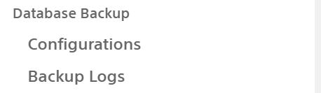

Got Setting --> Technical --> Backup Configuration to configure backups

Crate New Database Backup Configuration
Enter the database name and master password. specify backup type and destination.
Enter the backup directory path, if directory does not exist new directory will be created.